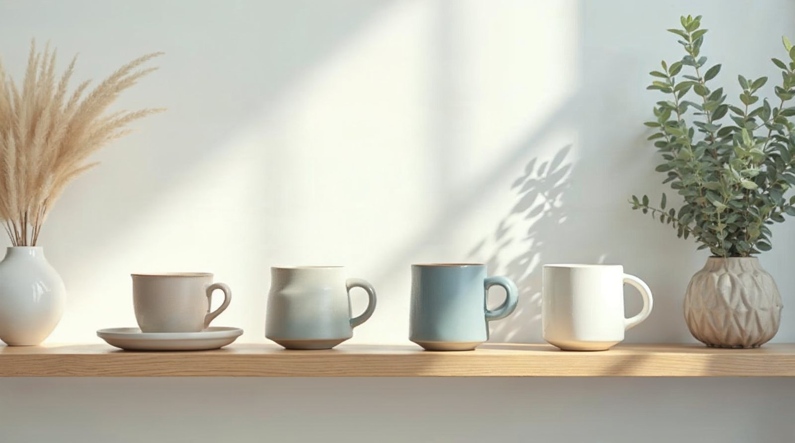
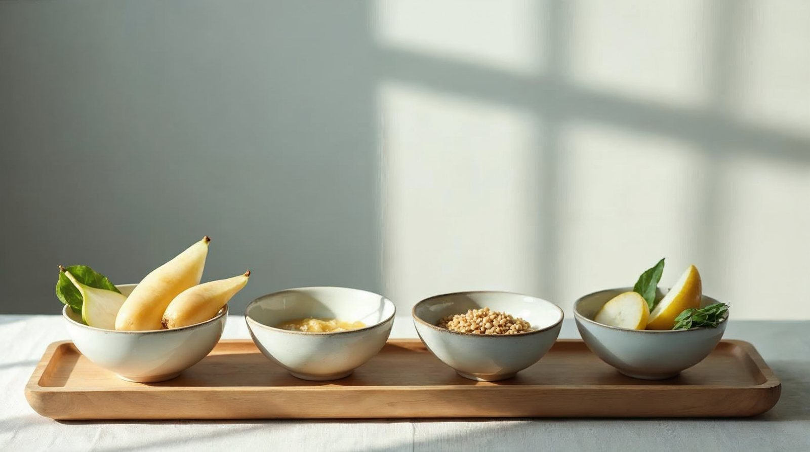

이종호 한의사 감수좋은꿈참사랑한의원 대표원장 (한의사 면허번호 19769)발행 2026-11-23 · 수정 2026-11-26
이 글의 차례
- 왜 체질을 이야기하나요
- 사상체질은 어디에서 시작된 이론인가요?
- 네 가지 체질은 어떻게 설명되나요?
- 왜 근거가 제한적이라고 말하나요?
- 체질 이야기가 쓸모 있을 때는 언제인가요?
- 체질과 음식 이야기는 이렇게 받아들이세요
- 자주 하는 오해
- 예를 들면 이런 경우입니다
- 먼저 이렇게 여쭙니다
- 일상에서 먼저 해 볼 수 있는 것
- 한의원에서 함께 살필 수 있는 경우
- 스스로 점검해 보세요
- 체질 이야기를 듣고 마음이 불편해졌다면
- 체질보다 먼저 살피는 것은 무엇인가요?
- 체질과 한약은 어떻게 이어서 보나요?
- 아이의 체질이 궁금하시다면
- 첫 방문에서 체질 이야기는 이렇게 다룹니다
- 계절과 나이에 따라 체질이 달라 보이나요?
- 이렇게 기록해 오시면 상담이 쉬워집니다
- 체질 때문에 바꾼 생활은 이렇게 점검해 보세요
- 이런 증상은 먼저 확인이 필요합니다
- 함께 읽으면 좋은 글
사상체질은 이제마 선생이 정리한 한의학 이론으로, 사람의 성향과 몸의 경향을 태양인, 소양인, 태음인, 소음인의 네 가지로 나누어 이해하는 방식입니다. 생활과 음식을 이야기할 때 참고가 될 수 있지만, 현대 의학적 근거가 제한적이어서 체질 하나로 병이나 치료를 결정하지는 않습니다. "저는 무슨 체질인가요?"라는 질문에는 이 한계를 함께 말씀드립니다.
왜 체질을 이야기하나요
- 같은 증상이라도 사람마다 소화, 땀, 추위와 더위를 타는 정도가 달라 접근을 달리할 수 있다는 관점입니다.
- 타고난 성향, 체형, 소화와 땀의 특징, 감정 반응을 함께 살펴 경향을 가늠합니다.
- 음식이나 생활 습관을 이야기할 때 대화의 출발점이 되기도 합니다.
- 다만 사람이 판단하는 부분이 있어 같은 사람도 상황에 따라 다르게 보일 수 있습니다.
사상체질은 어디에서 시작된 이론인가요?
사상체질은 조선 후기의 이제마 선생이 1890년대에 쓴 『동의수세보원』에서 정리한 이론입니다. 그 전의 한의학이 병의 모습을 중심으로 보았다면, 이 이론은 같은 병이라도 사람의 타고난 성향과 몸의 경향에 따라 다르게 보아야 한다는 생각을 앞에 내세웠습니다.
이제마 선생은 사람의 마음가짐과 감정의 흐름이 몸의 상태와 이어져 있다고 보고, 체질마다 조심할 마음의 습관도 함께 이야기했습니다. 그래서 사상체질은 몸의 특징뿐 아니라 성격과 감정 이야기가 함께 나오는 것이 특징입니다.
오랜 시간 많은 한의사가 이 관점을 이어 오며 다듬어 왔지만, 오늘날의 기준으로 보면 확인이 더 필요한 부분이 많습니다. 저는 이 역사를 존중하면서도, 지금 진료에서는 한계를 알고 쓰는 것이 맞다고 생각합니다.
네 가지 체질은 어떻게 설명되나요?
사상의학에서는 네 가지 체질을 대략 이렇게 설명합니다. 아래 내용은 이론에서 전해 오는 경향일 뿐이며, 한 사람을 이 안에 딱 맞춰 넣기는 어렵다는 점을 먼저 말씀드립니다.
- 태양인: 네 가지 가운데 드물다고 하며, 가슴과 목 위쪽이 발달하고 추진력이 강한 경향으로 설명합니다.
- 소양인: 몸에 열이 많고 행동이 빠르며, 가슴 쪽이 발달하고 엉덩이 쪽이 상대적으로 가볍다고 설명합니다.
- 태음인: 체격이 크고 땀이 많은 편이며, 꾸준하고 참을성이 있는 성향으로 설명합니다.
- 소음인: 체격이 아담하고 몸이 찬 편이며, 소화가 예민하고 꼼꼼한 성향으로 설명합니다.
읽다 보면 "나는 이것도 맞고 저것도 맞는데" 싶은 분이 많으실 겁니다. 그게 자연스러운 반응이고, 이론이 가진 한계를 보여 주는 대목이기도 합니다. 사람은 여러 경향이 섞여 있고, 나이와 생활, 그때의 몸 상태에 따라 다르게 보이기도 합니다.
왜 근거가 제한적이라고 말하나요?
사상체질은 한 사람의 관찰과 경험에서 출발해 정리된 이론이라, 체질을 가르는 기준이 숫자처럼 딱 떨어지지 않습니다. 같은 사람을 여러 명이 보아도 다른 체질로 판단하는 일이 생길 수 있습니다.
설문지나 체형 측정으로 체질을 나누려는 연구도 이어져 왔지만, 누구에게나 같은 결과를 내는 방법이 정해졌다고 말하기는 어렵습니다. 또 특정 체질이 특정 병에 잘 걸린다거나 특정 음식이 맞는다는 이야기도 아직 충분히 확인된 내용이 아닌 경우가 많습니다.
그래서 저는 체질을 "이 사람은 이렇다"고 정하는 도구가 아니라, 소화와 땀, 추위와 더위에 대한 반응을 이야기할 때 꺼내 볼 수 있는 하나의 관점으로 씁니다.
체질 이야기가 쓸모 있을 때는 언제인가요?
한계가 있다고 해서 체질 이야기가 아무 쓸모가 없다는 뜻은 아닙니다. 저는 이런 때에 체질적 경향을 꺼내 봅니다.
- 같은 음식을 먹어도 사람마다 몸의 반응이 다르다는 점을 함께 이야기할 때
- 땀, 추위와 더위, 소화의 특징을 묶어 평소 몸을 이해하는 실마리가 필요할 때
- 한약 상담에서 지금 증상과 진찰 소견을 본 뒤, 참고할 정보를 하나 더 얹을 때
반대로 병이 있는지 없는지를 가리거나, 치료를 할지 말지를 정할 때는 체질을 기준으로 삼지 않습니다.
체질과 음식 이야기는 이렇게 받아들이세요
체질별로 맞는 음식과 피할 음식을 정리한 표를 보신 분이 많을 겁니다. 이런 표는 참고로 보시되, 내 몸이 실제로 어떻게 반응하는지를 더 믿으시길 권합니다.
예를 들어 표에서는 피하라고 한 음식이 나에게는 아무 불편이 없다면 굳이 끊을 필요가 없습니다. 반대로 맞는다는 음식도 먹을 때마다 속이 불편하다면 줄여 보시는 것이 맞습니다. 음식을 크게 가려 드시기보다 여러 음식을 골고루, 알맞은 양으로 드시는 것이 기본입니다.
자주 하는 오해
- 체질을 알면 내 몸의 모든 것을 알 수 있다고 여기기 쉽지만, 체질은 경향을 이해하는 참고 자료일 뿐 병을 진단하지 않습니다.
- 체질에 맞는 음식만 먹어야 건강해진다고 생각하기 쉽지만, 한쪽으로 치우친 식사는 오히려 영양을 흐트러뜨릴 수 있습니다.
- 체질은 한 번 알면 평생 바뀌지 않는다고 단정하기 쉽지만, 같은 사람도 판단하는 방법과 시기에 따라 다르게 보일 수 있습니다.
- 성격만 보면 체질을 알 수 있다고 여기기 쉽지만, 성격은 환경과 상황에 따라 크게 달라져 그것만으로 판단하지 않습니다.
예를 들면 이런 경우입니다
- 예를 들어 인터넷 체질 테스트에서 소음인이 나왔다며 찬 음식을 모두 끊은 직장인이라면, 실제로 찬 음식을 먹고 불편했던 적이 있는지부터 함께 확인합니다.
- 예를 들어 친구가 태음인 같다고 해서 살이 찌는 것이 체질 탓이라고 여기는 수험생이라면, 체질보다 잠든 시각과 야식, 움직임을 먼저 함께 정리합니다.
- 예를 들어 체질에 좋다는 건강식품을 오래 드시는 어르신이라면, 복용 중인 약과 겹치지 않는지, 소화와 대변에 변화가 없는지부터 함께 살핍니다.
먼저 이렇게 여쭙니다
- 평소 소화는 어떤가요? 찬 음식을 먹으면 불편한가요?
- 땀은 많은 편인가요, 적은 편인가요?
- 더위와 추위 중 어느 쪽을 더 많이 타나요?
- 성격이나 감정 반응에서 스스로 느끼는 특징이 있나요?
- 이전에 체질 이야기를 들은 적이 있나요?
일상에서 먼저 해 볼 수 있는 것
- 체질 결과보다 실제로 먹고 불편했던 음식을 기록해 보기
- 인터넷의 체질별 음식표를 그대로 따르기 전에 몸의 반응을 먼저 보기
- 체질을 이유로 복용 중인 약을 임의로 줄이거나 끊지 않기(조절은 처방한 의사와 상의)
- 궁금한 점은 진료 때 질문으로 적어 오기

한의원에서 함께 살필 수 있는 경우
- 자신의 체질이 궁금할 때 상담으로 경향을 함께 살펴볼 수 있습니다.
- 음식이나 생활 습관에서 잘 맞는 부분을 함께 이야기할 수 있습니다.
- 한약 상담 때 체질적 경향을 참고 자료의 하나로 함께 고려합니다.
좋은꿈참사랑한의원에서는 체질 분류보다 지금의 불편과 생활을 먼저 봅니다. 모든 분께 맥부터 짚으며 그 이야기를 여쭙고, 필요하다고 판단될 때 설진·복진을 더해 살핀 뒤, 체질적 경향은 참고로만 더해 침이나 한약 상담 등을 정합니다.
스스로 점검해 보세요
- 인터넷이나 주변에서 들은 체질에 맞춰 음식을 크게 바꾼 적이 있다
- 체질 이야기를 들은 뒤 먹는 것이 불안해졌다
- 찬 음식이나 기름진 음식을 먹으면 실제로 불편한 날이 많다
- 더위나 추위를 남보다 유난히 많이 탄다
- 땀이 너무 많거나 너무 적어 불편하다
- 체질에 좋다는 건강식품이나 차를 꾸준히 드시고 있다
해당하는 항목이 있다면 진료 때 함께 말씀해 주세요. 체크 결과만으로 체질이나 몸 상태를 판단하지는 않습니다.
체질 이야기를 듣고 마음이 불편해졌다면
가끔 체질 이야기를 듣고 오히려 걱정이 커졌다는 분을 만납니다. "이 체질은 이런 병에 잘 걸린다"는 말을 듣고 불안해지거나, 먹어도 되는 음식이 너무 적어져 식사가 스트레스가 되기도 합니다.
그런 분께는 체질이 정해진 운명처럼 받아들일 이야기가 아니라는 점을 먼저 말씀드립니다. 들으신 내용 가운데 어떤 부분이 마음에 걸리는지 함께 정리하고, 실제 내 몸의 반응과 맞는지를 하나씩 확인해 봅니다. 그 과정만으로도 걱정이 한결 가라앉는 분이 많습니다.
체질은 내 몸을 이해하는 여러 관점 가운데 하나일 뿐입니다. 걱정이 생활을 불편하게 할 정도라면 체질 이야기는 잠시 내려놓으셔도 괜찮습니다. 몸의 반응을 살피는 일은 그 뒤에도 충분히 할 수 있습니다.
체질보다 먼저 살피는 것은 무엇인가요?
저는 체질 이름보다 지금 겪고 계신 불편과 생활 리듬을 먼저 봅니다. 어디가 언제부터 불편한지, 잠은 어떤지, 소화와 대변은 편한지, 몸이 찬지 더운지 같은 이야기입니다.
같은 체질이라는 말을 들은 두 분이라도 한 분은 야근으로 잠이 무너져 있고, 다른 한 분은 식사가 불규칙해 속이 불편하다면 살필 것이 전혀 다릅니다. 체질은 이런 이야기를 다 들은 뒤, 참고할 만한 부분이 있을 때만 꺼내는 마지막 단서에 가깝습니다. 그래서 체질 상담 없이 진료만 받으셔도 괜찮습니다.
체질과 한약은 어떻게 이어서 보나요?
체질을 알면 한약이 저절로 정해진다고 생각하시는 분이 많지만, 저는 한약을 정할 때 체질 이름보다 지금의 증상과 맥, 생활 이야기를 먼저 봅니다. 체질적 경향은 그 판단에 더하는 참고 정보 가운데 하나입니다.
한약 상담 전에는 지금 드시는 약과 영양제를 먼저 확인합니다. 드시는 약은 임의로 줄이거나 끊지 마시고, 약 봉투나 목록을 가져와 주세요. 임신 중이거나 임신 가능성이 있다면 먼저 말씀해 주시고, 산부인과와도 상의해 주시길 권합니다.
다른 곳에서 체질에 맞춰 지은 한약을 드신 적이 있다면, 언제 얼마나 드셨는지와 그때 몸의 변화를 알려 주세요. 지금 상태와 견주어 보는 데 도움이 됩니다.
아이의 체질이 궁금하시다면
아이를 키우다 보면 "우리 아이는 무슨 체질이냐"는 질문을 많이 하십니다. 아이는 자라면서 체형과 식성, 성격이 계속 바뀌기 때문에 지금 모습만으로 체질을 정해 두기는 더 어렵습니다.
그래서 아이의 경우에는 체질 이름보다 지금 잘 먹는지, 잘 자는지, 대변은 편한지, 감기에 자주 걸리는지를 먼저 봅니다. 체질 이야기로 아이의 식사를 지나치게 가리기보다, 골고루 먹고 제때 자는 생활을 함께 챙기는 것이 먼저입니다.
첫 방문에서 체질 이야기는 이렇게 다룹니다
첫 방문에는 원장이 맥을 짚으며 지금 불편한 증상과 그 시기, 잠·소화·대소변·땀·몸의 온기를 여쭙습니다. 체질이 궁금하시다고 하면 평소 체형과 소화, 땀, 추위와 더위를 타는 정도, 스스로 느끼는 성향을 함께 들으며 경향을 이야기합니다.
이때 체질 이름을 말씀드리더라도 단정하지 않고, 왜 그렇게 보았는지와 그 판단의 한계를 함께 설명드립니다. 침이나 한약 상담이 필요한 경우에도 체질 이름보다 지금 증상과 진찰 소견을 기준으로 이야기합니다.
계절과 나이에 따라 체질이 달라 보이나요?
같은 사람이라도 여름에는 더위를 많이 타는 것처럼, 겨울에는 추위를 많이 타는 것처럼 느끼기 쉽습니다. 나이가 들면 땀이 줄고 소화가 예민해지기도 하고, 출산이나 큰 병을 겪은 뒤 몸의 반응이 달라졌다는 분도 많습니다.
이런 변화 때문에 몇 년 전에 들은 체질과 지금의 내 몸이 맞지 않게 느껴질 수 있습니다. 저는 그런 차이를 이상하게 보지 않고, 지금의 몸을 기준으로 다시 이야기합니다. 예전에 들은 결과가 있다면 들은 시기와 그때의 몸 상태도 함께 알려 주세요.

이렇게 기록해 오시면 상담이 쉬워집니다
- 먹고 나서 불편했던 음식과 편했던 음식
- 땀, 추위와 더위, 소화에 대해 스스로 느끼는 특징
- 이전에 들은 체질 결과와 그 이유
- 복용 중인 약과 영양제
체질 때문에 바꾼 생활은 이렇게 점검해 보세요
- 체질에 맞춘다며 음식을 바꿨다면 2~4주 동안 식사량, 체중, 기운, 대변을 짧게 적어 보세요.
- 몸이 편해졌다면 그 음식 습관을 이어 가되, 너무 많은 음식을 한꺼번에 끊지는 마세요.
- 오히려 식사가 부담스럽고 즐겁지 않아졌다면 원래 식사로 돌려 보고, 궁금한 점은 진료 때 상의해 보세요.
이런 증상은 먼저 확인이 필요합니다
- 체질 이야기를 듣고 특정 음식을 크게 끊은 뒤 체중이 급히 줄거나 기운이 크게 떨어진 경우
- 체질을 이유로 복용 중인 약을 멈춘 뒤 증상이 다시 나빠진 경우
이런 신호가 있으면 한의원보다 가까운 병원이나 응급실을 먼저 찾으세요.
함께 읽으면 좋은 글
- 체질 상담 결과가 한의원마다 다르게 나오면 어떻게 이해하면 되나요?
- 사상체질은 무엇이고 어떻게 알아보나요?
- 내 체질이 궁금할 때, 사상체질은 진료실에서 어떻게 참고하고 어디까지 믿으면 되나요?

여쭙는 것
- 평소 소화는 어떤가요? 찬 음식을 먹으면 불편한가요?
- 땀은 많은 편인가요, 적은 편인가요?
- 더위와 추위 중 어느 쪽을 더 많이 타나요?
생활에서 해 볼 것
- 체질 결과보다 실제로 먹고 불편했던 음식을 기록해 보기
- 인터넷의 체질별 음식표를 그대로 따르기 전에 몸의 반응을 먼저 보기
- 체질을 이유로 복용 중인 약을 임의로 줄이거나 끊지 않기(조절은 처방한 의사와 상의)
한의원에서 함께 살필 것
- 자신의 체질이 궁금할 때 상담으로 경향을 함께 살펴볼 수 있습니다.
- 음식이나 생활 습관에서 잘 맞는 부분을 함께 이야기할 수 있습니다.
- 한약 상담 때 체질적 경향을 참고 자료의 하나로 함께 고려합니다.
먼저 확인이 필요한 신호
- 체질 이야기를 듣고 특정 음식을 크게 끊은 뒤 체중이 급히 줄거나 기운이 크게 떨어…
- 체질을 이유로 복용 중인 약을 멈춘 뒤 증상이 다시 나빠진 경우
한눈에 보는 표
| 구분 | 핵심 |
|---|---|
| 여쭙는 것 | 평소 소화는 어떤가요? 찬 음식을 먹으면 불편한가요? 땀은 많은 편인가요, 적은 편인가요? |
| 생활에서 해 볼 것 | 체질 결과보다 실제로 먹고 불편했던 음식을 기록해 보기 인터넷의 체질별 음식표를 그대로 따르기 전에 몸의 반응을 먼저 보기 |
| 한의원에서 함께 살필 것 | 자신의 체질이 궁금할 때 상담으로 경향을 함께 살펴볼 수 있습니다. 음식이나 생활 습관에서 잘 맞는 부분을 함께 이야기할 수 있습니다. |
| 먼저 확인이 필요한 신호 | 체질 이야기를 듣고 특정 음식을 크게 끊은 뒤 체중이 급히 줄거나 기운이 크게 떨어진 경우 체질을 이유로 복용 중인 약을 멈춘 뒤 증상이 다시 나빠진 경우 |
자주 묻는 질문
체질은 한 번 정해지면 평생 같은가요?
체질을 어떻게 볼지는 관점마다 다르며, 한 번의 판단으로 정해진 것이라고 단정하지 않습니다.
체질을 알면 병을 알 수 있나요?
아닙니다. 체질은 경향을 이해하는 참고 자료이며 병을 진단하는 도구가 아닙니다.
체질 검사는 꼭 받아야 하나요?
아닙니다. 원하시거나 필요하다고 판단될 때 상담으로 살펴봅니다.
인터넷 체질 테스트 결과를 믿어도 되나요?
재미 삼아 보시는 정도로 생각해 주세요. 질문 방식과 그날의 기분에 따라 결과가 달라질 수 있어, 실제로 불편했던 음식과 생활을 기록해 보시는 것이 더 쓸모 있습니다.
좋은꿈참사랑한의원은 재진 때 지난번 이야기부터 이어서 여쭙니다. 진료시간과 예약은 오시는 길에서 확인하세요.
어디서 상담받을 수 있나요?
좋은꿈참사랑한의원은 서울 동작구 만양로2길 2 신성빌딩 3층·5층(서울 동작구 상도동, 7호선 상도역 3번 출구 근처)에 있습니다. 한의사 3명(이종호 대표원장, 조영기 수석진료원장, 정원영 진료원장)이 진료합니다. 진료시간은 평일 09:30~20:00(점심 13:00~14:00), 토·일·공휴일 09:30~15:00이며, 방문 전 전화로 확인을 권합니다. 예약은 네이버 예약, 카카오톡 상담, 전화 02-815-7510로 받습니다.
이 글은 일반적인 건강 정보이며 개인의 진단이나 치료를 대신하지 않습니다. 증상이 있거나 복용 중인 약이 있다면 진료를 통해 확인하세요. 치료 효과는 개인마다 다를 수 있습니다.
작성 기준: 일반적으로 알려져 있는 건강 정보를 참고해 정리했습니다(대표원장 감수). 증상 기록은 1~2주 동안 하루 1회, 비슷한 시간에 적어 오시면 지난 상태와 비교하기 쉽습니다.